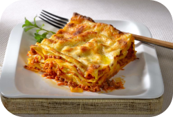
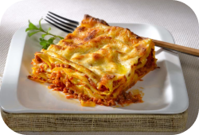

Para el relleno (boloñesa de carne): 500 g. de carne (una mezcla de cerdo y ternera)
2 pimientos rojos
2 zanahorias
2 dientes de ajo
150 g. de bacon o panceta
2 cebollas grandes
250 g. de tomate natural (1 vaso aproximadamente)
250 ml de vino blanco (200 ml. aproximadamente)
100 ml. de aceite de oliva virgen extra
1 cucharita colmada de orégano seco (o hierbas provenzales)
Sal y pimienta negra recién molida (al gusto de cada casa)
12 láminas de lasaña o lasagna Garofalo
Para hacer la bechamel: (para un litro más o menos, la suficiente para la lasaña): 125 g de harina de trigo
de todo uso
125 g de mantequilla
1 litro de leche entera
Una pizca de nuez moscada (unos 4 g.)
Sal y pimienta negra recién molida (al gusto de cada casa)
Para finalizar y gratinar la lasaña: 100-120 g. de queso rallado Grana Padano (o mezcla con vuestro queso
preferido para gratinar)